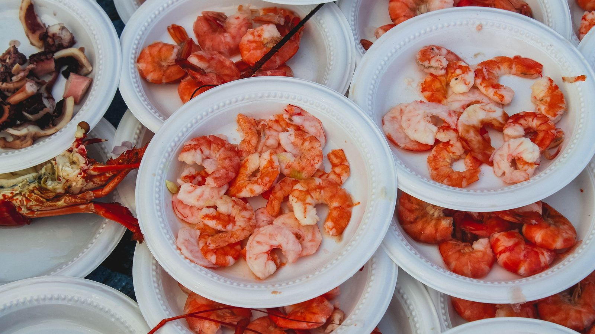
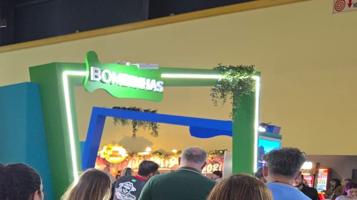

Itapema · Poder Público
Itapema · Poder PúblicoItapema fechou R$ 59.746 em contratos de cultura em 17 dias, e R$ 44.900 estão num só, o teatro do Dia das Crianças
O que a cidade ao lado gasta com cultura no mesmo mês, para comparar.
O festival da cidade vizinha começa nesta quinta-feira, dia 8, e vai até o dia 13. Abrimos um por um os contratos publicados no Diário Oficial dos Municípios e somamos: R$ 3.580.000. O maior de todos não é show, é o da empresa que organiza o evento, R$ 1.725.000. Os seis shows juntos ficam em R$ 1.855.000. Parte do dinheiro volta: a Prefeitura fica com 12% da venda de comida e 15% da de bebida.
Em 30 segundos · Modo de Leitura, formato original Santa Informa
O 11º Festival do Camarão é em Porto Belo.
Começa dia 8 de outubro e vai até o dia 13.
São seis dias de festa.
Fomos ao Diário Oficial ver quanto custa.
Somamos sete contratos: R$ 3.580.000.
O maior é o da empresa que organiza tudo.
São R$ 1.725.000 para a Lind Guimar Machado.
Ela ganhou um pregão eletrônico em setembro.
Os seis shows somam R$ 1.855.000.
Roupa Nova é o mais caro: R$ 585 mil, dia 11.
Guilherme e Benuto, R$ 370 mil, dia 10.
Marcos e Belutti, R$ 320 mil, dia 12.
Kamisa 10, R$ 250 mil, dia 8.
Cidade Negra, R$ 250 mil, dia 9.
Entre Elas, R$ 80 mil, dia 13.
Os seis shows entraram por inexigibilidade.
Quer dizer: sem disputa, por carta de exclusividade.
Nem tudo é gasto. Parte volta.
A Prefeitura fica com 12% da comida vendida.
E com 15% da bebida.
A empresa tem dois dias úteis para repassar.
Em 1º de outubro saiu o decreto da comissão.
Ela acompanha a bilheteria e a prestação de contas.
Isso tem história. Olhe o ano passado.
Em 31 de outubro de 2025 a Prefeitura abriu processo.
Contra a empresa do 10º Festival, a DCX Eventos.
Motivo: divergência nos valores e atraso no repasse.
A empresa deste ano é outra.
No Diário não há decisão desse processo até hoje.
Porto Belo tem 32.615 moradores.
Os R$ 3,58 milhões dão R$ 110 por morador, conta nossa.
TurismoPublicada em Redação Santa Informa

O 11º Festival do Camarão de Porto Belo acontece nos dias 8, 9, 10, 11, 12 e 13 de outubro. É a maior festa de outubro da Costa Esmeralda e puxa gente de Itapema e de Bombinhas. Quanto custa, ninguém tinha somado. Fomos contrato por contrato no Diário Oficial dos Municípios e chegamos a R$ 3.580.000.
O maior contrato não é de artista. É o da empresa que monta e toca o evento, a Lind Guimar Machado, que venceu o Pregão Eletrônico 001/2026 da Fundação Municipal de Turismo e assinou em 18 de setembro por R$ 1.725.000. Os seis shows somam R$ 1.855.000 e entraram todos por inexigibilidade, que é a contratação sem disputa, com carta de exclusividade. O mais caro é o Roupa Nova, R$ 585 mil, no dia 11. Depois vêm Guilherme e Benuto, R$ 370 mil no dia 10, e Marcos e Belutti, R$ 320 mil no dia 12. Kamisa 10 abre no dia 8 e Cidade Negra toca no dia 9, os dois a R$ 250 mil. O Entre Elas fecha no dia 13, por R$ 80 mil. Dividido pelos 32.615 moradores de Porto Belo, o total dá R$ 110 por pessoa, conta nossa.
O festival não é só despesa. Pelo termo de referência, a empresa organizadora repassa ao município 12% da venda de alimentos e 15% da de bebidas, em até dois dias úteis depois do fim da festa. Em 1º de outubro, uma semana antes da abertura, o prefeito Joel Orlando Lucinda assinou o Decreto 4.582, que cria a comissão encarregada de acompanhar a bilheteria, apurar essas vendas, emitir relatório diário e dar parecer sobre a prestação de contas. No ano passado o decreto equivalente saiu em 8 de outubro, com o 10º Festival já em cima.
O resumo de 30 segundos está no topo e a versão completa é o texto acima. Aqui ficam as três leituras da casa sobre o mesmo assunto.
Clara, a otimista
Seis dias de festa, seis shows grandes e entrada numa cidade de 32 mil habitantes. É disso que vive a Costa Esmeralda em outubro, quando a temporada ainda não começou e o comércio precisa de gente na rua. Pousada, restaurante, barraca, estacionamento, taxista: o festival paga muito mais boleto do que aparece no contrato.
E tem uma coisa boa no meio da papelada. A Prefeitura não só cobra percentual sobre comida e bebida como montou gente para conferir, e montou antes de a festa começar. Aprender com o ano anterior e sair na frente é raro o bastante para merecer registro.
Seu Prudêncio, o criterioso
Merece atenção o tamanho do contrato de organização. R$ 1.725.000 é mais que qualquer show e quase a metade de tudo que o festival custa. Esse é o contrato que passou por pregão, então houve disputa de preço, o que é bom. Mas é também o contrato que concentra a arrecadação na mão de um terceiro, e foi exatamente aí que o problema apareceu em 2025.
Vale acompanhar o repasse. O prazo é curto, dois dias úteis depois do fim, e a regra já existia no ano passado, quando não foi cumprida a contento, segundo a própria Prefeitura. Uma sugestão útil: publicar o valor arrecadado e o valor repassado assim que a comissão fechar o parecer. Hoje o cidadão de Porto Belo sabe quanto o município gastou e não sabe quanto recebeu de volta, e as duas pontas precisam estar na mesma página para a conta fazer sentido.
Dito isso, reconheço o acerto. Criar a comissão em 1º de outubro, com uma semana de antecedência, em vez de no dia da abertura como em 2025, é correção de rota concreta. E deixar os percentuais escritos em decreto público, com conta bancária e prazo, é mais transparência do que a maioria das festas de cidade pequena oferece.
Caco, o sarcástico
R$ 585 mil no Roupa Nova. Para efeito de comparação, Itapema gastou R$ 59.746 em contratos de cultura em 17 dias inteiros. Dá para pagar quase dez vezes a cultura de Itapema com uma noite de Porto Belo. Não estou dizendo que está errado, estou dizendo que a vizinha canta mais alto.
Gosto também da palavra inexigibilidade, que é o jeito oficial de dizer "só existe um Roupa Nova". Difícil discutir. Já tentou pedir orçamento de um segundo?
Agora o lado bom, e é grande. Uma cidade de 32 mil moradores conseguiu construir uma festa que enche hotel na baixa temporada e devolve percentual de cada chope para o caixa. Reclamar do tamanho do contrato é fácil de Itapema, onde a festa açoriana ainda está procurando patrocinador para o algodão-doce.
Fontes: todos os contratos estão no Diário Oficial dos Municípios de Santa Catarina, na entidade Prefeitura municipal de Porto Belo. O contrato de organização, de R$ 1.725.000 com a Lind Guimar Machado, é o Extrato do Contrato 011/2026 FUMTUR, publicado em 21 de setembro de 2026, que também traz as seis datas do festival. Os shows estão nos extratos dos contratos 004/2026 (Marcos e Belutti, R$ 320 mil), 005/2026 (Guilherme e Benuto, R$ 370 mil), 006/2026 (Roupa Nova, R$ 585 mil), 007/2026 (Cidade Negra, R$ 250 mil), 008/2026 (Kamisa 10, R$ 250 mil) e 009/2026 (Entre Elas, R$ 80 mil). Os percentuais de 12% e 15%, o prazo de dois dias úteis e a composição da comissão estão no Decreto 4.582, de 1º de outubro de 2026, e a versão do ano passado, de 8 de outubro de 2025, no Decreto 4269. O processo administrativo contra a DCX Eventos está na Portaria 1140, de 31 de outubro de 2025. A população de 32.615 moradores é a estimativa do IBGE para 2026, na tabela 6579 do Sidra, e está no nosso Raio-X da Região. A soma dos contratos e a divisão por morador são contas nossas.
Itapema · Poder PúblicoO que a cidade ao lado gasta com cultura no mesmo mês, para comparar.

Costa Esmeralda · TurismoComo as cidades da Costa Esmeralda dividem a conta do turismo.
 Itapema · Cultura
Itapema · CulturaA festa grande de Itapema, que acontece um mês depois da de Porto Belo.